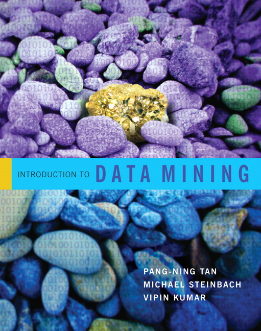

|

Dr. Jianpeng Xu
Data Scientist @ eBay
Personal Email: jianpeng.xu@gmail.com
LinkedIn:

Short Biography
Jianpeng Xu earned his Ph.D in CSE Department, Michigan State University (MSU) in 2017 Summer, under the supervision of Dr. Pang-Ning Tan. He received his MS in Computer Science, Harbin Institute of Technology (HIT) in 2010 and BS in Computer Science, Shandong University (SDU) in 2007. Jianpeng has a broad research interest in Data Mining and Machine Learning, which includes GeoSpatio-temporal data mining, change detection, frequent pattern mining, multi-task learning, online learning, and data mining and machine learning foundamental algorithms and their applications. His thesis topic is Multi-task learning and its application on Spatio-temporal data. He received the Best Poster Award from Doctoral Forum on SDM 2016 and Best Paper Award from IEEE BigData 2016. He interned at Narus (Boeing Inc) in 2012, where he worked on designing data mining algorithm to detect malicious behaviors in network traffic. In summer 2014 and 2015, he interned at Samsung Research America and worked on user behavior and demographics analysis as well as recommender systems for Samsung Smart TV. Jianpeng is currently working at eBay as a Data Scientist.
Click here for my full CV
|
Recent News:
| 04/16/2018 | Jianpeng has one paper accepted by IJCAI 2018. |
| 01/29/2017 | Jianpeng has one paper accepted by TKDE. |
| 12/08/2016 | Jianpeng received the Best Paper Award from IEEE BigData 2016. |
| 10/12/2016 | Jianpeng has one paper accepted in IEEE BigData 2016. |
| 05/12/2016 | Jianpeng received Best Poster Award from Doctoral Forum in SDM 2016. |
|
SELECTED PEER-REVIEWED PUBLICATIONS
- MUSCAT: Multi-Scale Spatio-Temporal Learning with Application to Climate Modeling
Jianpeng Xu, Xi Liu, Tyler Wilson, Pang-Ning Tan, Pouyan Hatami and Lifeng Luo
International Joint Conference on Artificial Intelligence (IJCAI), 2018 (Paper) [Github]
- Online Multi-task Learning Framework for Ensemble Forecasting
Jianpeng Xu, Pang-Ning Tan, Jiayu Zhou and Lifeng Luo
IEEE Transactions on Knowledge and Data Engineering (TKDE), 2017 (Paper) [Github]
- WISDOM: Weighted Incremental Spatio-Temporal Multi-Task Learning via Tensor Decomposition
Jianpeng Xu, Jiayu Zhou, Pang-Ning Tan, Xi Liu, Lifeng Luo
IEEE BigData2016 Best Paper Award (Paper)[Github]
- Multi-Task Feature Interaction Learning
Kaixiang Lin, Jianpeng Xu, Shuiwang Ji, Jiayu Zhou
KDD2016 (Paper)[Github]
- Synergies that Matter: Efficient Interaction Selection via Sparse Factorization Machine
Jianpeng Xu, Kaixiang Lin, Pang-Ning Tan and Jiayu Zhou
SDM2016 (Paper)[Github]
- GSpartan: a Geospatio-Temporal Multi-task Learning Framework for Multi-location Prediction
Jianpeng Xu, Pang-Ning Tan, Lifeng Luo and Jiayu Zhou
SDM2016 (Paper)[Github]
- FORMULA: FactORized MUlti-task LeArning for task discovery in personalized medical models
Jianpeng Xu, Jiayu Zhou and Pang-Ning Tan
SDM2015 (Paper)[Github]
- ORION: Online Regularized multI-task regressiON and its application to ensemble forecasting
Jianpeng Xu, Pang-Ning Tan and Lifeng Luo
ICDM2014 (Paper)[Github]
- HDminer: Efficient Mining of High Dimensional Frequent Closed Patterns from Dense Data and Its Application
Jianpeng Xu and Shufan Ji
ICDMW2014 on Scalable Data Analytics: Theory and Applications (Paper)
- Detecting Malicious Clients in ISP Networks Using HTTP Connectivity Graph and Flow Information
Lei Liu, Sabyasachi Saha, Ruben Torres, Jianpeng Xu, Pang-Ning Tan, Antonio Nucci, Marco Mellia
ASONAM2014 (Paper)
PATENT
- Detecting Malicious Endpoints Using Network Connectivity and Flow Information
Sabyasachi Saha, Lei Liu, Ruben Torres, Jianpeng Xu, Antonio Nucci
Publication Number: US8813236 B1 (Link)
Course Taught (Teaching Assistant)

CSE881: Data Mining
including: Data Preprocessing, Classification, Regression, Association Analysis, Clustering, Anomaly Detection, Network Mining, Data Stream Mining
CSE491/891: Computational Techniques for Large-Scale Data Analysis
including: Data Collection, Storage, and Preprocessing, Data Analysis (Classification, Regression, Clustering, etc.), Implementation (Programming based on Mapreduce, Hadoop, Hive, Pig, etc.), Case Study and Applications
Service
- Program Committee Member for BIBM 2015, 2016, IJCAI 2015, MLRec 2015, 2016, 2017(in conjunction with SDM)
- Invited Reviewer for Conferences: IJCAI 2016, AAAI 2016, SDM 2015, 2016, WSDM2015, DSAA2015, CIKM2014, DSAA2014, ICDM2014
- Reviewer for Journals: Neurocomputing, BMC Bioinformatics, TNNLS, Pattern Recognition, EURASIP
Awards:
- Best Paper Award: IEEE BigData 2016
- Best Poster Award: Doctoral Forum, SDM2016
- Student Travel Award: IEEE BigData 2016, SDM 2015, 2016, ICDM 2014, MSU Graduate School 2014
- Honorable Mention Award in Mathematical Contest in Modeling (MCM), 2006
|
My Advisor
Collaborators
Tutorials
|
Affiliations
Former Affiliations
|
|